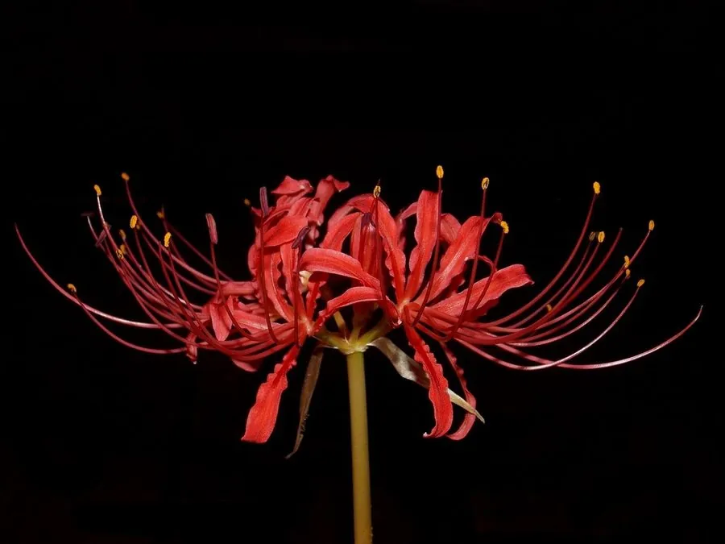

花卉与草本 · 植物界
石蒜 Lycoris radiata

石蒜科多年生球根花卉，鲜红色花被片向后反卷如龙爪，花叶永不相见，是秋日林下极具辨识度的植物，原产中国。
- 分类
- 门被子植物门纲木兰纲目天门冬目科石蒜科属石蒜属
- 栖息环境
- 林下、溪边与石缝等阴湿处，喜半阴、湿润
- 地理分布
- 原产中国长江流域及日本，中国南方林下常见
- 保护级别
- 暂无评估
物种志
石蒜为石蒜科石蒜属多年生球根草本，地下具球形鳞茎。叶片带状，深绿色，在花期结束后才抽出，翌年夏季枯萎。花葶在秋季抽出，高 30–60 厘米，伞形花序有花 4–7 朵，花鲜红色，花被片 6 枚、强烈向后反卷，边缘皱曲，雄蕊细长伸出，花期 8–9 月；果实为蒴果。
石蒜原产中国长江流域及日本，常生于阴湿的林下、溪边和石缝，喜半阴、湿润和排水良好的环境。它秋天开花时叶片尚未生出，花谢后才长叶，叶枯时花又未开，因此有“花叶永不相见”之说，民间也常把它与离别、思念联系在一起。石蒜鳞茎含石蒜碱等多种生物碱，有毒，不可食用；因花形奇特、色彩醒目，常用于林下布置和切花，但需注意避免误食。
形态与习性
- 株高花葶高 30–60 厘米
- 花期8–9 月，花期约两周
- 果期花后结蒴果
- 光照喜半阴，忌强光直射
- 水分喜湿润，忌积水
- 土壤疏松、排水良好的腐殖质土
- 繁殖分球繁殖
- 主要用途林下观赏、切花（有毒）
趣味知识
- 石蒜花叶永不相见：开花时无叶，长叶时无花。
- 鲜红色花被片向后强烈反卷、边缘皱曲，形似龙爪，故有“龙爪花”之称。
- 石蒜鳞茎含石蒜碱等生物碱，有毒，不可食用。
- 它常生于阴湿林下，在秋季抽出花葶，花期约两周。